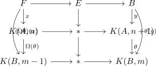

transgression theorem
Proposition
Let $\theta \in K(A,n+1) \rightarrow K(B,m)$ be a cohomology operation and assume that $(x,y)$ is transgressive pair in a serre spectral sequence transgressive for some fiber sequence, then so is $(\Omega \theta(x), \theta(y))$.
Proof
follows from transgressive pairs and fiber sequences where $(x,y)$ is characterized by a map of fiber sequences
\begin{displaymath}
\begin{tikzcd}
F \rar \dar{x} \arrow[bend right]{dd}{(\Omega \theta)(x)}& E \rar \dar & B \dar{y} \arrow[bend left]{dd}{\theta(y)} \\
K(A,n) \rar & * \rar \dar & K(A,n+1) \\
\end{tikzcd}
\end{displaymath}so in particular we may apply $\theta$ and get
